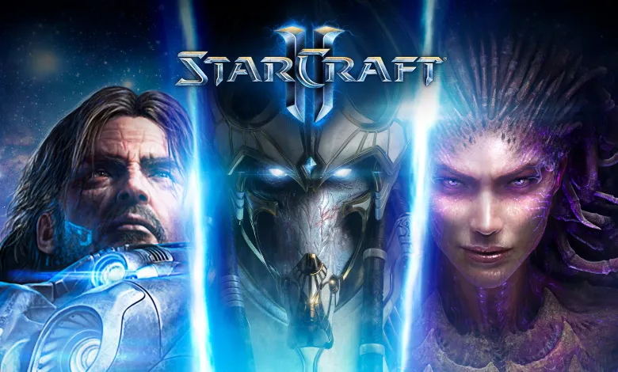

El juego se desarrolla en el siglo XXVI en un sector distante del espacio llamado el Sector Koprulu, donde tres razas luchan por el dominio:
Terran 🏢 (Humanos exiliados de la Tierra)
Zerg 🦠 (Criaturas alienígenas insectoides)
Protoss 🔱 (Raza avanzada con poderes psiónicos)
CLP$ 10.000